Dolci: Waffelman
Quante volte ci viene voglia di dolci tipo waffel, crepes o pancake ma ci scocciamo di preparare tutto e allora rinunciamo?
Dolci: Oggi voglio proporvi un prodotto di qualità che soddisferà il vostro palato in men che non si dica!
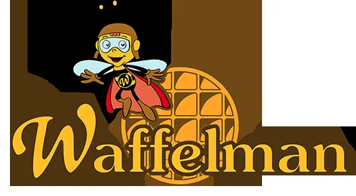
Sto parlando di WAFFELMAN, un'azienda presente sul mercato dal 1987. Produce appunto, waffel ma non solo. Fornisce i suoi prodotti su tutto il territorio nazionale e internazionale tra gelaterie, yougurterie, bar, negozi alimentari e centri commerciali.
Quindi vi sto parlando di un prodotto che sicuramente avrete già assaggiato.
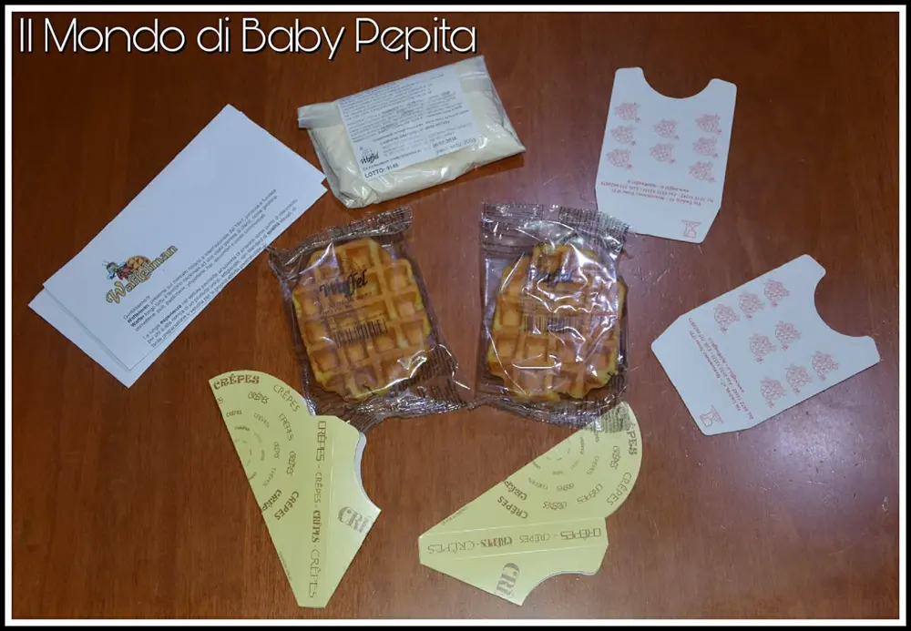
Grazie alla loro lunga esperienza nel settore, hanno fatto sì che si affermassero come punto di riferimento per chi è alla ricerca di un prodotto artigianale e con ingredienti genuini senza conservanti.I waffel dell'azienda Waffelman, sono prodotti con le tradizionali ricette che nel corso di questi 30 anni sono state perfezionate per offrire tutto il gusto e la bontà che un waffel può garantire.
La cosa importante è che non vengono utilizzati coloranti, conservanti, OGM.
Vengono fatti con uova pastorizzate e provenienti da allevamenti italiani.
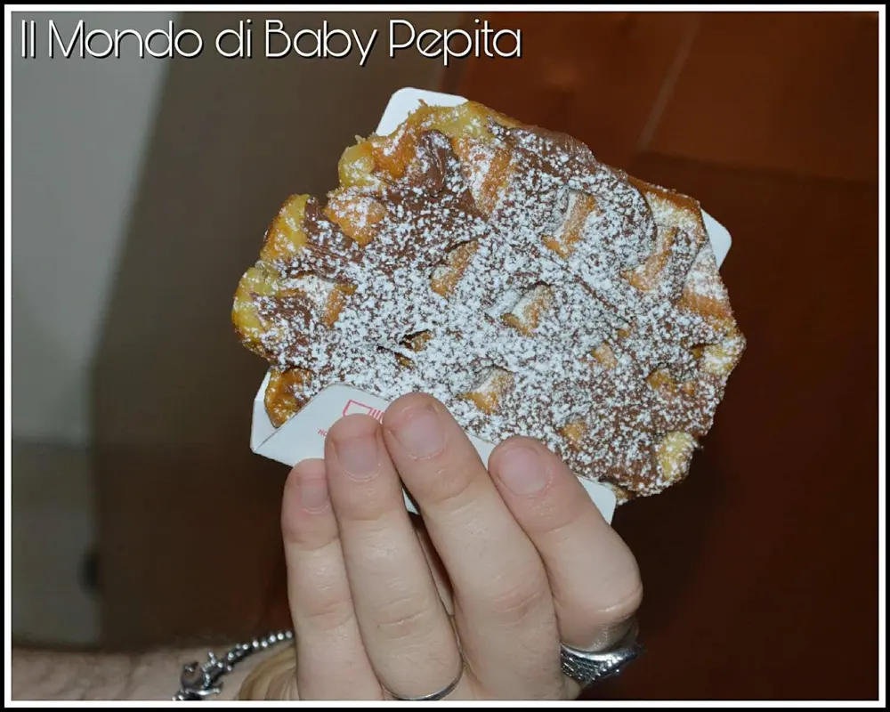
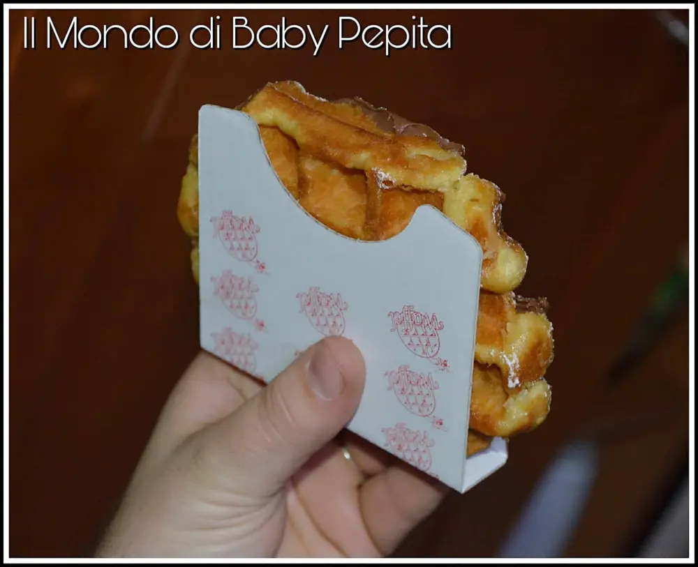
Prezzo: 55,91€ - 56,85€ (cartone da 54 pezzi o da 72 pezzi Imbustati singolarmente).
Prezzo: 115,93€ (112 waffel Imbustati singolarmente).
Oltre ai waffel ho avuto modo di provare anche il preparato per crepe.
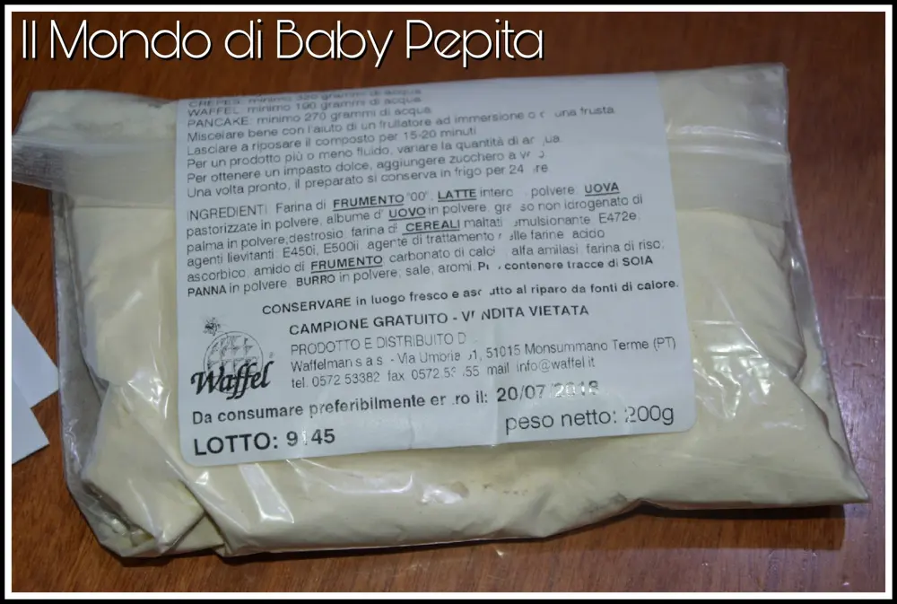
Di cosa si tratta?
È una polvere per crepes o pancake.
Con questo preparato infatti, potrete preparare sia piatti dolci che salati, poiché si tratta di un prodotto a base neutra, senza zucchero e ne sale.
Vi faccio capire meglio.
- waffel: 1 kg di preparato + 950 ml di acqua
- crepe: 1 kg di preparato + 1,6 L di acqua
- pancake: 1 kg di preparato + 950/1350 ml di acqua.
In pratica dobbiamo solo aggiungere l'acqua al preparato ed il gioco è fatto.
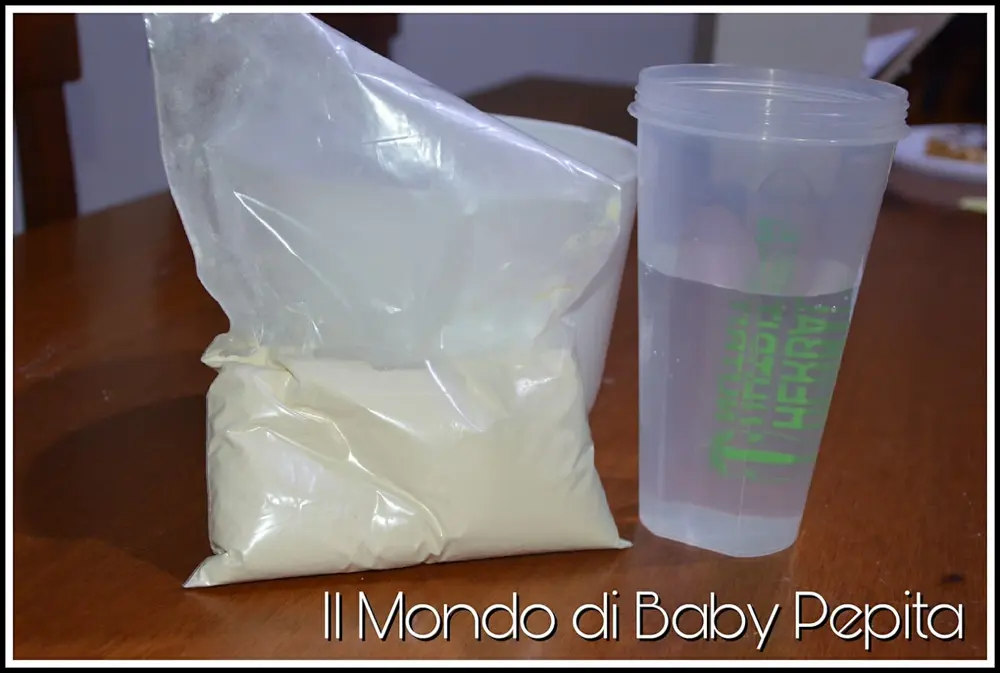
Poi ovviamente è possibile variare le quantità di acqua a seconda se si vuole ottenere un impasto più fluido o meno.
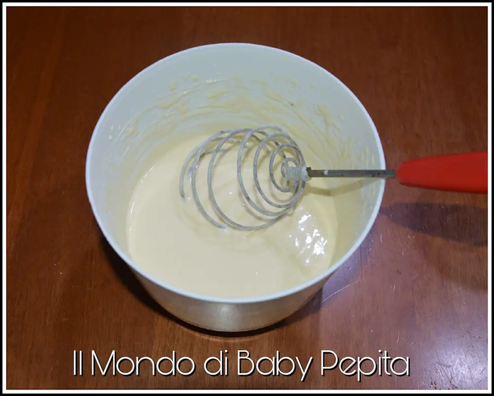
Noi abbiamo poi preparato le crepe, non abbiamo resistito :D
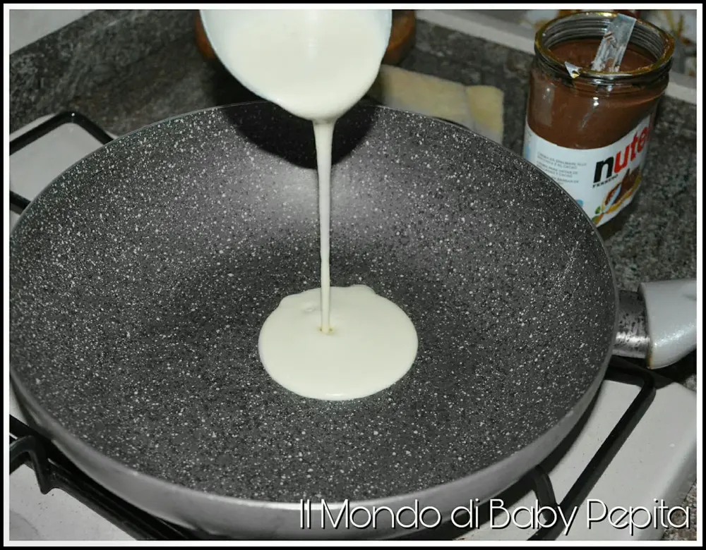
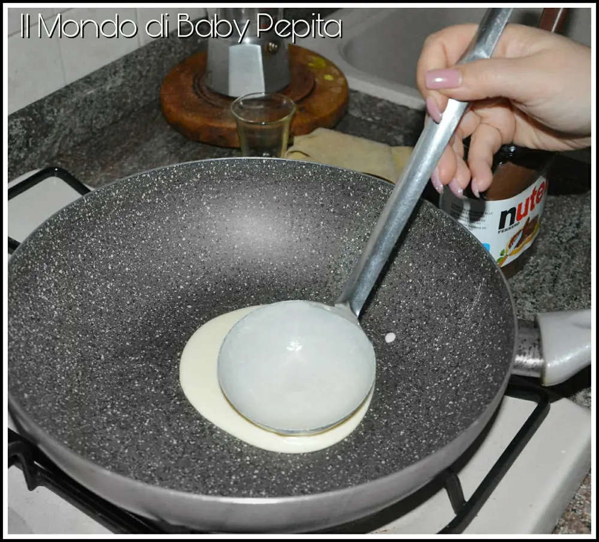
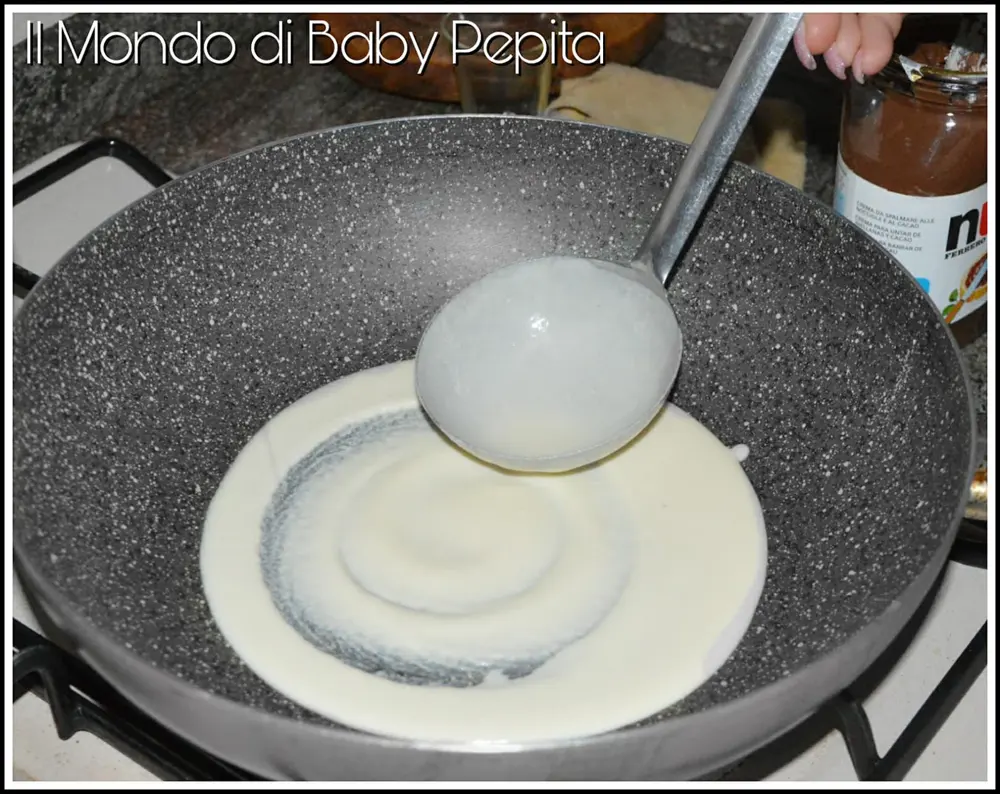
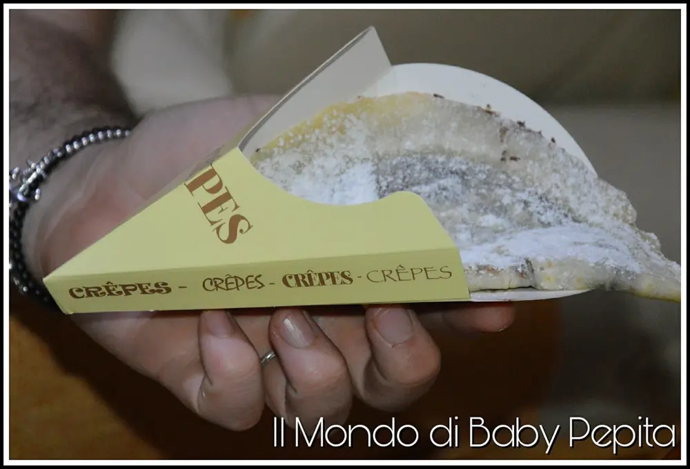
Se si vuole ottenere un impasto dolce, puoi aggiungere da 200 g a 350 g di zucchero a velo ogni 1 kg di preparato.
Prezzo del preparato: 17,90€
Io ho provato sia crepe che waffel e devo dire che sono buoni. Ottimi per la vostra attività ma anche per casa, magari in una serata tra amici che è inevitabile non poter perdere tempo dietro all'impasto o appunto, a cuocere waffel.
La soluzione c'è per deliziare i vostri invitati in qualcosa di gustoso ma altrettanto buono.